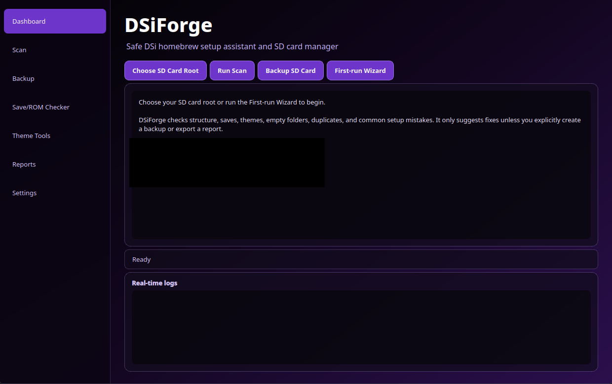

Setup structure
Finds `boot.nds`, `_nds`, TWiLight Menu++ folders, config files, missing folders, and misplaced boot files.
Safe DSi homebrew setup assistant
DSiForge scans, backs up, and explains Nintendo DSi SD card setups for TWiLight Menu++, Unlaunch, and hiyaCFW without piracy tools, ROM downloaders, or automatic file moves.
What it checks
Finds `boot.nds`, `_nds`, TWiLight Menu++ folders, config files, missing folders, and misplaced boot files.
Reports missing saves, orphaned saves, duplicate ROM names, suspicious save sizes, and zero-byte files.
Checks common TWiLight theme assets, reads PNG dimensions, and previews detected theme images inside the app.
Copies the SD folder into timestamped backup directories and tracks backup history without modifying the source.
Actual app
The desktop UI keeps everything visible: sidebar navigation, scan actions, report panels, status messages, and real-time logs. It is designed for beginners who need confidence, not noise.
Go to the download page
Safety line
Terminal UI
Launch DSiForge, choose Terminal UI, and run scans or backups from a friendly prompt.
Choose DSiForge mode:
1 - Terminal UI
2 - Desktop GUI
Press 1 or 2: 1
dsiforge> use E:\
dsiforge> scan
dsiforge> backup --output C:\Users\You\Backups --zip
dsiforge> open-reportReady when the repo is